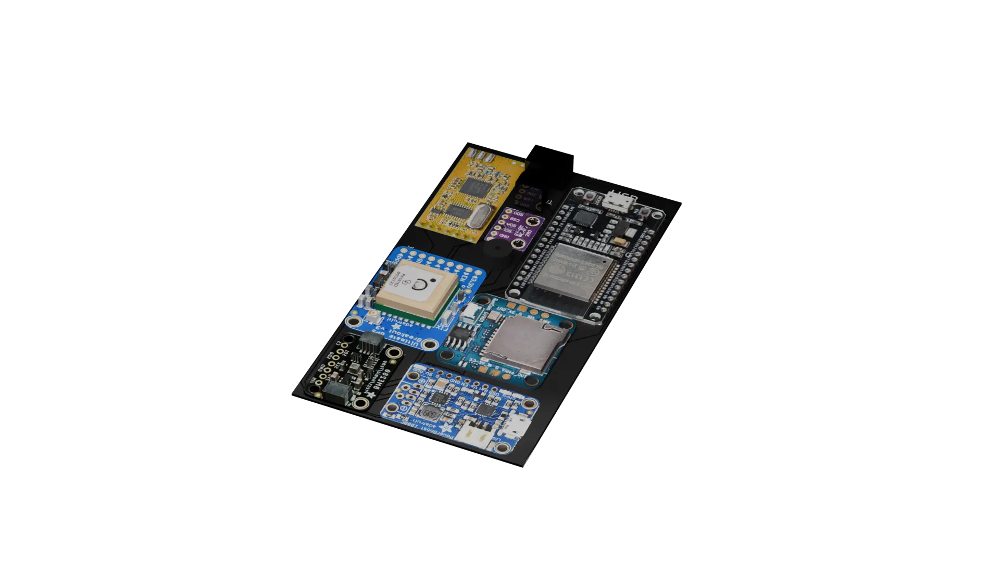
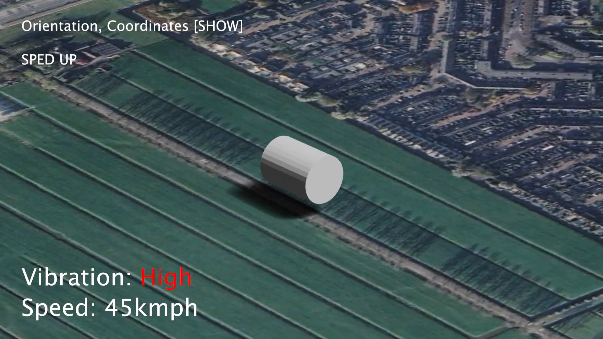
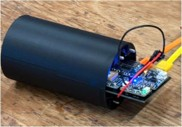

The Mission
Our objective is to develop a highly advanced CanSat capable of collecting dynamic flight data, including angular velocity, pressure, and density. Utilizing the superior processing power of the ESP32 and our precisely fabricated custom PCB, we aim to push the boundaries of reliability and set a new standard for future teams.
Beyond technical execution, our mission is deeply rooted in STEM outreach. By promoting our project locally and open-sourcing our codebase in MicroPython, we are paving the way for the next generation of engineers to iterate, debug, and rapidly prototype their own aerospace hardware.


Mission Overview
3D Flight Reconstruction
By capturing continuous stability metrics through a 9-axis IMU, we reconstruct a powerful 3D visualization of the CanSat's absolute orientation throughout its entire descent. This interlaced data provides rare, invisible insight into the rocket's aerodynamic real-world behavior.
Purpose & Application
Orientation control is crucial for any aerospace system. This 3D mapping not only demonstrates our flight path flawlessly but provides invaluable altimeter-paired telemetry that we intend to open-source into a global library, helping future teams improve their aerodynamic layouts.
Hardware Testing
Endurance Cycles
Recognizing that our CanSat relies heavily on sensitive electronics, we subjected the frame to aggressive G-force simulators and rigorous vibration stress testing utilizing a motorized chassis.
Coupled with repeated drop tests from viewing towers, these physical evaluations allowed us to patch stress fractures and optimize our parachute deployment systems long before arriving at the launch site.
